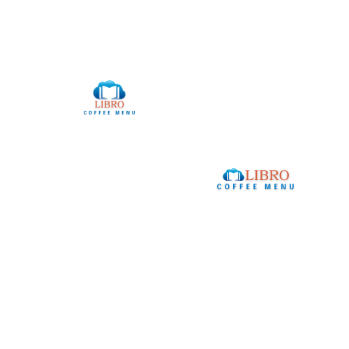

Wordmark
Corail — brush wordmark
Concept logo for a bio clothing label. Dry-brush lettering over a soft coral stroke gives the name a handmade, natural feel that suits organic fabrics.
Logo & brand identity
Logo designs made in Illustrator, from hand-brushed wordmarks to line-art symbols. Corail and Libro are concept brands created as design briefs.
Concept logo for a bio clothing label. Dry-brush lettering over a soft coral stroke gives the name a handmade, natural feel that suits organic fabrics.

An alternative direction for the same brand: a fine-line wave and sun in coral and turquoise, paired with light geometric lettering.

Concept logo for a book café: a book-inside-a-cloud symbol, drawn as stacked and horizontal lockups so it works on menus and signage.

Name and logo explorations for the smart-glasses project, built around an eye and camera-lens symbol with the line "Clear Sight, More Freedom".